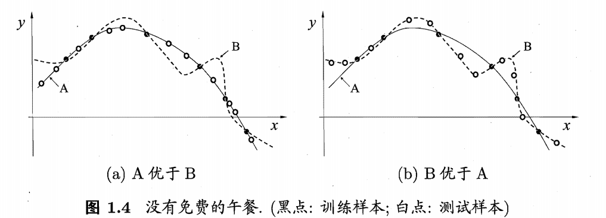

机器学习基础#
这里我会记录一些自己学到的机器学习中的一些基本概念。主要来源于《机器学习（西瓜书）》《深度学习（花书）》以及超算课程笔记等
基本概念《机器学习》#
- 模型指全局性结果，模式指局部结果。
- 记录的集合称为一个"数据集" (data set) ，其中每条记录是关于一个事件或对象(这里是一个西瓜)的描述，称为一个"示例" (instance) 或"样本" (sample). 反映事件或对象在某方面的表现或性质的事项，例如"色泽""根蒂" "敲声"，称为"属性" (attribute) 或"特征" (feature); 属性上的取值，例如"青绿" "乌黑"，称为"属性值" (attribute value). 属性张成的空间称为"属性空间" (attribute space) "样本空间" (sample space) 或"输入空间"例如我们把"色泽" "根蒂" "敲声"作为三个坐标轴，则它们张成一个用于描述西瓜的三维空间，每个西瓜都可在这个空间中找到自己的坐标位置.由于空间中的每个点对应一个坐标向量，因此我们也把一个示例称为一个"特征向量" (feature vector).
以西瓜为例 - 从数据中学得模型的过程称为”学习“或者”训练“。要建立”预测“（prediction）模型，我们首先需要”标记“（label），拥有标记信息的示例叫做”样例“。我们若预测的是离散值，则是”分类“（classification）；若是连续值，则是“回归”。其中关于“二分类任务：通常称其中一类为”正类“（positive class），另外一类为”反类“或”负类“（negative class）。对于分类和回归而言是监督学习.（supervised learning）
- 当然我们也可以对对象做”聚类“（clustering），即对对象进行分组，每组称为”簇“（cluster）如：浅色瓜、深色瓜、大瓜小瓜等等。 通常来说做聚类的学习过程中无标记信息，我们称为无监督学习（unsupervised learning）
- 机器学习的目的是为了更好适用于”新样本“，而不仅仅是在已有样本上得到好的结果。这种能力我们称为”泛化“（generalization）能力，具有强泛化能力的模型通常在整个样本空间上都工作得很好。我们一般假设样本空间全体样本服从一个未知”分布“（distribution）。我们获得的每个样本都是独立地从这个分布上采样获得的，即独立同分布（independent and identically distributed，简称$i,i,d$.)一般而言训练样本越多，我们通过学习得到的模型泛化能力越强。
- 归纳偏好：相当于找到一条穿过所有训练样本点的区线。我们更偏好光滑的区线。但我们根据已有的数据得到的曲线并不一定对所有空间内所有样本适用，比如：
简称：NFL（no free lunch theorem）定律。所以也说明我们要针对学习的问题来谈论算法的优劣
进阶概念（来自花书）#
机器学习的本质上属于应用统计学，更多地会关注于如何用计算机估计的统计复杂函数。因此我们会探讨两种统计学的主要方法：频率派估计和贝叶斯推断。机器学习算法可以大体分为监督/无监督/强化学习。大部分深度学习都是基于随机梯度下降的算法求解的。
学习算法#
任务T#
- 学习的过程不能算任务，学习是指我们所谓的获取完成任务的能力。我们一般将任务定义为机器学习系统应该如何处理样本。样本是指我们从某些对象或者事件当中收集到的已经量化的特征的集合。
- 机器学习的任务主要有：分类、输入缺失分类（描述联合概率分布的函数）、回归（与分类相比更偏向于一种预测）、转录（如语音识别等）、机器翻译（例如英语转换成法语等）、结构化输出（类似于语法分析|图像分割等）、异常检测、合成与采样、缺失值填补、去噪、密度估计或概率质量估计
性能度量P#
我们通过度量模型的准确率，使用测试集来评估系统性能
经验E#
- 大部分算法可以理解为在整个数据集上获取经验。
- 由于概率的链式法则，联合分布可以拆解成n个监督学习问题。
示例：线性回归#
这里有数学推导，建议可以看看书。